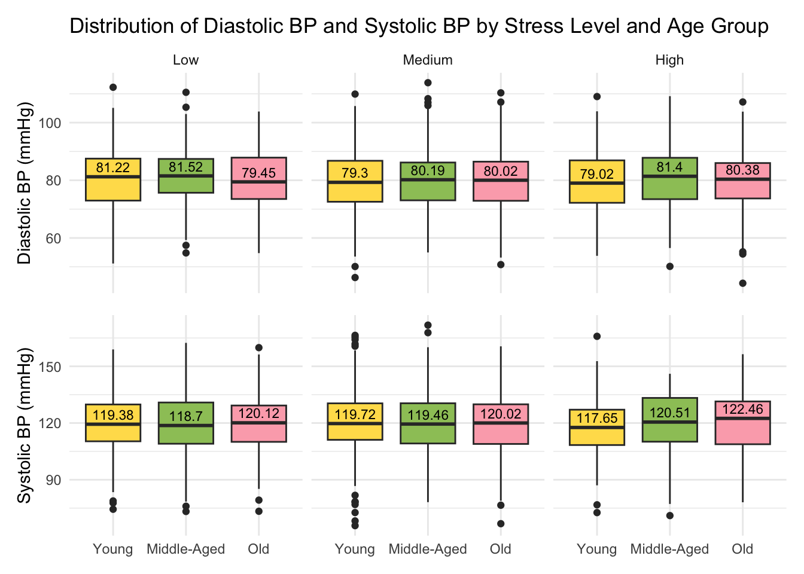

pacman::p_load(tidyverse,patchwork,plotly,ggdist, ggridges,ggstatsplot,ggthemes)Take-home Exercise 01: Visualizing and Uncovering Trends on Heart Attacks in Japan
1 Overview
1.1 Background
Heart disease remains one of the leading causes of mortality worldwide, and Japan is no exception. Despite the country’s reputation for longevity and a traditionally healthy diet, heart-related health issues—including heart attacks—continue to be a significant public health concern. The impact of heart attacks varies across different age groups, with risk factors and outcomes often differing between younger and older individuals. While Japan’s aging population naturally sees a higher prevalence of heart attacks among adults, recent trends suggest that younger individuals are also increasingly at risk, raising concerns about lifestyle habits and diet.
Historically, Japan’s diet—rich in fish, vegetables, and low in saturated fats—has been associated with lower cardiovascular disease rates. However, research by Iso (2011) has highlighted a gradual shift toward Westernized dietary patterns, characterized by increased consumption of meat and processed foods, which has contributed to rising cholesterol levels and a greater risk of heart disease. Additionally, lifestyle factors such as physical inactivity, smoking, and alcohol consumption have played a role in shaping cardiovascular health trends within the country.
Medical advancements and early interventions have improved survival rates, but the rising burden of cardiovascular diseases still calls for further research and public awareness.
1.2 Objectives
This article aims to explore the patterns of heart attacks in Japan across different age groups and shedding light on key factors contributing to their occurrence. By examining trends, potential risk factors, and demographic variations, we seek to provide insights into how heart attack cases differ between youth and adults.
Through data-driven visualizations, we will highlight the prevalence, underlying causes, and potential warning signs associated with heart attacks in Japan. The goal is to help healthcare professionals, policymakers, and the general public better understand the evolving landscape of cardiovascular health and to encourage proactive measures for prevention and early detection.
2 Methodology & R Packages Used
We will follow the outlined methodology flow for this exercise, starting with data import, followed by data preparation, and concluding with statistical graphics, including exploratory analysis to draw insights.

The following R packages will be used to achieve the objective.
| Package | Explanation |
|---|---|
| tidyverse | to efficiently manipulate and clean data, utilizing functions from packages like dplyr and tidyr for data wrangling. |
| ggplot2 | to create informative and aesthetically pleasing visualizations, such as histograms and boxplots, to analyze the data |
| patchwork | to combine multiple ggplot2 plots into a cohesive layout, making it easier to present related visualizations side by side |
| plotly | |
| ggstatsplot | |
| ggthemes |
3 The Dataset
The dataset, Heart Attack in Japan: Youth vs. Adult, used in this analysis was obtained from Kaggle. It contains data for heart attack cases across different age groups.
This dataset includes both numerical and categorical variables related to cardiovascular health, such as cholesterol levels, blood pressure, heart rate, and lifestyle factors. These indicators are crucial in assessing the likelihood of heart attacks and understanding how risk factors differ between younger and older populations.
In the next section, we will import the raw dataset and refine it further to ensure its readiness for visual analysis and gain deeper insights.
4 Data Preparation
4.1 Importing the Data
The code chunk below imports japan_heart_attack_dataset.csv into R environment by using read_csv() function of readr package. readr is one of the tidyverse package.
heartattack_data <- read_csv("data/raw/japan_heart_attack_dataset.csv")Let’s view the structure of the dataset using glimpse(), which allows us to see data structure and variable names as well as types.
glimpse(heartattack_data)Rows: 30,000
Columns: 32
$ Age <dbl> 56, 69, 46, 32, 60, 25, 78, 38, 56, 75, 36, 40…
$ Gender <chr> "Male", "Male", "Male", "Female", "Female", "F…
$ Region <chr> "Urban", "Urban", "Rural", "Urban", "Rural", "…
$ Smoking_History <chr> "Yes", "No", "Yes", "No", "No", "No", "No", "Y…
$ Diabetes_History <chr> "No", "No", "No", "No", "No", "No", "Yes", "No…
$ Hypertension_History <chr> "No", "No", "No", "No", "No", "No", "Yes", "No…
$ Cholesterol_Level <dbl> 186.4002, 185.1367, 210.6966, 211.1655, 223.81…
$ Physical_Activity <chr> "Moderate", "Low", "Low", "Moderate", "High", …
$ Diet_Quality <chr> "Poor", "Good", "Average", "Good", "Good", "Go…
$ Alcohol_Consumption <chr> "Low", "Low", "Moderate", "High", "High", "Hig…
$ Stress_Levels <dbl> 3.644786, 3.384056, 3.810911, 6.014878, 6.8068…
$ BMI <dbl> 33.96135, 28.24287, 27.60121, 23.71729, 19.771…
$ Heart_Rate <dbl> 72.30153, 57.45764, 64.65870, 55.13147, 76.667…
$ Systolic_BP <dbl> 123.90209, 129.89331, 145.65490, 131.78522, 10…
$ Diastolic_BP <dbl> 85.68281, 73.52426, 71.99481, 68.21133, 92.902…
$ Family_History <chr> "No", "Yes", "No", "No", "No", "No", "No", "No…
$ Heart_Attack_Occurrence <chr> "No", "No", "No", "No", "No", "No", "No", "No"…
$ Extra_Column_1 <dbl> 0.40498852, 0.03627815, 0.85297888, 0.39085280…
$ Extra_Column_2 <dbl> 0.43330004, 0.51256694, 0.21959083, 0.29684675…
$ Extra_Column_3 <dbl> 0.62871236, 0.66839275, 0.61343656, 0.15572404…
$ Extra_Column_4 <dbl> 0.70160955, 0.11552874, 0.50800995, 0.87025144…
$ Extra_Column_5 <dbl> 0.49814235, 0.42381938, 0.90066981, 0.39035591…
$ Extra_Column_6 <dbl> 0.007901312, 0.083932768, 0.227205241, 0.40318…
$ Extra_Column_7 <dbl> 0.79458257, 0.68895108, 0.49634358, 0.74140891…
$ Extra_Column_8 <dbl> 0.29077922, 0.83016364, 0.75210679, 0.22396813…
$ Extra_Column_9 <dbl> 0.49719307, 0.63449028, 0.18150125, 0.32931387…
$ Extra_Column_10 <dbl> 0.52199452, 0.30204337, 0.62918031, 0.14319054…
$ Extra_Column_11 <dbl> 0.79965663, 0.04368285, 0.01827617, 0.90778075…
$ Extra_Column_12 <dbl> 0.72239788, 0.45166789, 0.06322702, 0.54232201…
$ Extra_Column_13 <dbl> 0.1487387, 0.8786714, 0.1465122, 0.9224606, 0.…
$ Extra_Column_14 <dbl> 0.8340099, 0.5356022, 0.9972962, 0.6262165, 0.…
$ Extra_Column_15 <dbl> 0.061632229, 0.617825340, 0.974455410, 0.22860…At a glimpse, we see that there at 32,000 rows and 32 columns.
4.2 Filtering for Relevant Variables
We notice that there were certain columns titled “Extra_Column_” from column number 18 to 32. We will remove these columns as there are no explanations in the metadata from the source, leaving us with 17 variables to work with.
heartattack_data <- heartattack_data %>% select(-c(18:32))We also notice that this dataset also contains data for people with no heart attack occurrence (in the Heart_Attack_Occurrence column). Since we are performing exploratory data analysis (EDA), it would be valuable to keep both groups, as this allows us to identify and compare characteristics like age, gender, lifestyle, or pre-existing conditions between those who had a heart attack and those who didn’t, potentially letting us uncover patterns or trends that can inform your study.
4.3 Checking for Duplicates and Missing values
It is essential to check for duplicates and missing values before we move forward. We will use the following code to check for them.
The duplicated() function in the base package is used to check for duplicates in heartattack_data.
sum(duplicated(heartattack_data))[1] 0The colSums() function in the base package is used to check for missing values in heartattack_data.
colSums(is.na(heartattack_data)) Age Gender Region
0 0 0
Smoking_History Diabetes_History Hypertension_History
0 0 0
Cholesterol_Level Physical_Activity Diet_Quality
0 0 0
Alcohol_Consumption Stress_Levels BMI
0 0 0
Heart_Rate Systolic_BP Diastolic_BP
0 0 0
Family_History Heart_Attack_Occurrence
0 0 There are no duplicates and missing values in this dataset.
4.4 Grouping Variables into Categories
Some numerical variables (represented as “dbl” when we checked data structure in section 4.1), will be grouped into the following categories for meaningful insights:
Age: For this variable which ranges from 18 to 79, we will use equal bins for each category, categorized as:
Young: 18–39
Middle-Aged: 40–59
Old: 60–79
Cholesterol Level: According to guidelines from the American Heart Association (AHA) and National Heart, Lung, and Blood Institute (NHLBI) (Lauer et al, 2004), a desirable low cholesterol level is Below 200 mg/dL, a borderline high medium would be between 200 to 239 mg/dL and high cholesterol level is considered as 240 mg/dL and above.To align with this finding, we will categorize as:
- Low: 80–199 mg/dL
- Medium: 200–239 mg/dL
- High: 240–336 mg/dL
Stress Level: A common method to measure stress is the Perceived Stress Scale (Cohen,1994) where individuals rate their stress from 0 (no stress) to 10 (extreme stress). Since our dataset usesa 0 to 10 range, it’s likely a self-reported scale, where 0-3 represents minimal or manageable stress, 4-6 represents moderate stress and 7-10 represents high to extreme stress, with potential health risks. Therefore, we will categorize the stress levels as:
- Low: 0.000–3.999
- Medium: 4.000–6.999
- High: 7.000–10.000
Heart Rate: According to Mayo Clinic, low/below normal heart rate is below 60 bpm, a normal healthy range is 60–100 bpm, and above normal is above 100 bpm. Aligning with this, our categories will be:
Low: 30.000–59.999 bpm
Normal: 60.000–99.999 bpm
High: 100.000–108.7812 bpm
heartattack_data <- heartattack_data %>%
mutate(
AgeCat = case_when(
Age >= 18 & Age <= 39 ~ "Young",
Age >= 40 & Age <= 59 ~ "Middle-Aged",
Age >= 60 & Age <= 79 ~ "Old"
),
Cholesterol = case_when(
Cholesterol_Level >= 80.0000 & Cholesterol_Level <= 199.9999 ~ "Low",
Cholesterol_Level >= 200.0000 & Cholesterol_Level <= 239.9999 ~ "Medium",
Cholesterol_Level >= 240.0000 & Cholesterol_Level <= 336.9999 ~ "High"
),
Stress = case_when(
Stress_Levels >= 0.000 & Stress_Levels <= 3.999999 ~ "Low",
Stress_Levels > 4.000 & Stress_Levels <= 6.999999 ~ "Medium",
Stress_Levels > 7.000 & Stress_Levels <= 10.000 ~ "High"
),
HeartRate = case_when(
Heart_Rate >= 30.000 & Heart_Rate <= 59.99999 ~ "Low",
Heart_Rate > 60.000 & Heart_Rate <= 99.99999 ~ "Normal",
Heart_Rate > 100.000 & Heart_Rate <= 108.78217 ~ "High"
),
BMICat = case_when(
BMI >= 0 & BMI <= 17.999999 ~ "Underweight",
BMI > 18 & BMI <= 24.999999 ~ "Normal",
BMI > 25 ~ "Overweight"
)
)4.5 Convert Data Types
We note that all variables are in the correct data types. However, we will convert the categorical columns such as Smoking_History,Diabetes_History, Hypertension_History, Family_History Heart_Attack_Occurrence, and our newly created columns as factor for better visualisation and to put the categories in order.
heartattack_data <- heartattack_data %>%
mutate(
Smoking_History = factor(Smoking_History, levels = c("No", "Yes")),
Diabetes_History = factor(Diabetes_History, levels = c("No", "Yes")),
Hypertension_History = factor(Hypertension_History, levels = c("No", "Yes")),
Family_History = factor(Family_History, levels = c("No", "Yes")),
Heart_Attack_Occurrence = factor(Heart_Attack_Occurrence, levels = c("No", "Yes")),
# Setting specific orders for more than 2 categorical factors
Alcohol_Consumption = factor(Alcohol_Consumption, levels = c("None", "Low", "Moderate", "High")),
Diet_Quality = factor(Diet_Quality, levels = c("Poor", "Average", "Good")),
Physical_Activity = factor(Physical_Activity, levels = c("Low", "Moderate", "High")),
AgeCat = factor(AgeCat, levels = c("Young", "Middle-Aged", "Old")),
Cholesterol = factor(Cholesterol, levels = c("Low", "Medium", "High")),
Stress = factor(Stress, levels = c("Low", "Medium", "High")),
HeartRate = factor(HeartRate, levels = c("Low", "Normal", "High")),
BMICat = factor(BMICat, levels = c("Underweight", "Normal", "Overweight"))
)Lastly, save the prepared output to rds format using the following code chunk. We will use this newly prepared data from this point.
write_rds(heartattack_data, file = "data/rds/heartattack.rds")heartattack <- read_rds("data/rds/heartattack.rds")We will create a separate subset of the dataset for individuals who reported ‘Yes’ for Heart Attack Occurrence, enabling us to conduct further analysis on the distribution within this specific group.We will create a separate subset of the dataset for individuals who reported ‘Yes’ for Heart Attack Occurrence, enabling us to conduct further analysis on the distribution within this specific group.
yesheartattack <- heartattack %>%
filter(Heart_Attack_Occurrence == "Yes")write_rds(yesheartattack, file = "data/rds/yesheartattack.rds")yesheartattack <- read_rds("data/rds/yesheartattack.rds")5 Data Visualisation
5.1 Visualising the Distributions
To begin, we first assess the distribution of heart attack occurrences in our dataset, which consists of 30,000 records. How many individuals experienced a heart attack? Is the dataset balanced in terms of heart attack cases versus non-cases?
Next, we examine the distribution of gender—are males and females equally represented? Similarly, we analyze the regional distribution to determine whether rural and urban populations are proportionally represented.
Understanding these proportions is crucial, as any significant imbalance could influence our analysis and the generalizability of our findings. By exploring these distributions, we can better assess potential biases and determine whether adjustments, such as weighting or stratified analysis, may be necessary moving forward.

Only 10% of individuals in the dataset have experienced a heart attack, while 90% have not. This suggests an imbalance in the dataset, where heart attack cases are much fewer than non-cases.
The dataset has an equal representation of males (50%) and females (50%).This balance ensures that gender-related analyses are not biased toward one group over the other.
The underrepresentation of rural populations means findings may be more urban-centric unless adjustments are made. If rural populations are at different levels of heart attack risk, this imbalance may impact the generalizability of results.
Young age category is over represented as compared to middle-aged and old. Since this may overemphasize the vulnerabilitiy of young individuals, we will have to adjust this AgeCat variable for further analysis as shown in section 5.2.3.
In stress categories is the medium level is over represented as well. Since this may overemphasize the medium stress level, we will have to adjust this Stress variable for further analysis as shown in section 5.3.1.
5.2 Starting Big: Overview of Heart Attack Occurrence in Japan
5.2.1 Association of Heart Attack Occurrence with Continuous Factors
To determine whether numerical factors are associated with heart attack occurrence, we will first assess the distribution of each numerical variable. The following will be tested:
Hypothesis:There is no significant difference in numerical factors between individuals with and without a heart attack.
Alternative Hypothesis: There is a significant difference in numerical factors between individuals with and without a heart attack.
To decide whether to use the Welch’s t-test (for normally distributed data) or the Mann-Whitney U test (for non-normally distributed data), we will first check the normality of each numerical variable.
Since all 6 continuous variables represent normal distribution, we will use Welch test which is type = “p”.


Insights
The Welch’s t-test for Stress Level has a p-value of 0.04, indicating a statistically significant difference in stress levels between individuals with and without a heart attack.
The mean stress level is slightly lower for individuals who had a heart attack (4.93) compared to those who did not (5.01), but the effect size (g hedges=0.04) suggests a very small difference. While statistically significant, this difference may not be clinically meaningful.
BMI, Cholesterol Level, Heart Rate, Systolic BP, and Diastolic BP all had p-values greater than 0.05, indicating no significant differences between individuals with and without a heart attack. This suggests that these factors, in isolation, do not show strong evidence of a direct association with heart attack occurrence in this dataset.
Apart from Stress, we fail to reject the null hypothesis that there is no significant difference between individuals with and without a heart attack for the rest of the variables.
5.2.2 Association of Heart Attack Occurrence with Categorical Factors


Insights from Two Sample Mean Tests
The Welch’s t-test for Stress Level has a p-value of 0.04, indicating a statistically significant difference in stress levels between individuals with and without a heart attack.
The mean stress level is slightly lower for individuals who had a heart attack (4.93) compared to those who did not (5.01), but the effect size (g hedges=0.04) suggests a very small difference. While statistically significant, this difference may not be clinically meaningful.
BMI, Cholesterol Level, Heart Rate, Systolic BP, and Diastolic BP all had p-values greater than 0.05, indicating no significant differences between individuals with and without a heart attack. This suggests that these factors, in isolation, do not show strong evidence of a direct association with heart attack occurrence in this dataset.
There is no clear association observed between the levels of categorical factors like alcohol consumption and heart attack occurrence at a significance level of 5%. For example, low alcohol consumption does not correlate with a lower risk of heart attack, nor does high alcohol consumption correlate with a higher risk for this particular dataset.
5.2.3 Overview of Heart Attack Cases: The Demographics
We will first explore the distribution of heart attack occurrences across different age groups and genders in Japan. By categorizing individuals into age groups (Young, Middle-Aged, and Old), we can observe trends in heart attack prevalence, with particular focus on gender differences. This helps identify which demographic groups are more vulnerable and gives us the overview.
Adjustment for Age Category Imbalance
In section 5.1, it was observed that the Young Age Group (36%) is naturally more represented in the dataset. If we analyze the data without adjustment, this could lead to an overemphasis on the risk of heart attacks among young individuals. To mitigate this potential bias, we will normalize the prevalence of heart attacks within each age group by accounting for their overall representation in the dataset.
The prevalence of heart attack in each age category will be normalized using the following formula:
\(PrevalenceAgeCat\) = Number of Heart Attack Cases in Age Group/ Total Individuals in Age Group
This adjustment ensures that the analysis of heart attack risk is proportionate to the actual representation of each age group in the dataset, providing more accurate insights into the relationship between age and heart attack prevalence.

# Compute total individuals in each age category (from full dataset)
total_age_counts <- heartattack %>%
group_by(AgeCat) %>%
summarise(TotalCount = n())
# Compute number of heart attack cases in each age category (from filtered dataset)
age_summary <- yesheartattack %>%
group_by(AgeCat) %>%
summarise(HeartAttackCases = n()) %>%
left_join(total_age_counts, by = "AgeCat") %>%
mutate(Prevalence = (HeartAttackCases / TotalCount) * 100)
custom_colors <- c("Young" = "#ffe372", "Middle-Aged" = "#9cc567", "Old" = "#e79251")
# Plot 1: Heart Attack Occurrence by Age Category
p1 <- ggplot(age_summary, aes(x = AgeCat, y = Prevalence, fill = AgeCat)) +
geom_bar(stat = "identity", color = "black") +
geom_text(aes(label = sprintf("%.2f%%", Prevalence)), vjust = 1.5, size = 3) +
scale_fill_manual(values = custom_colors) +
labs(x = "Age Category") +
theme_minimal() +
theme(legend.position = "none", plot.title = element_blank(),
axis.title.y = element_blank(),axis.text.y = element_blank(), axis.title.x = element_blank())
# Compute percentage of Heart Attack Occurrence for each Gender
gender_summary <- yesheartattack %>%
group_by(Gender) %>%
summarise(Percentage = (n() / nrow(yesheartattack)) * 100)
# Plot 2: Heart Attack Occurrence by Gender
p2 <- ggplot(gender_summary, aes(x = Gender, y = Percentage, fill = Gender)) +
geom_bar(stat = "identity", color = "black") +
geom_text(aes(label = sprintf("%.1f%%", Percentage)), vjust = 1.5, size = 3) +
labs(x = "Gender") +
theme_minimal() +
theme(legend.position = "none", plot.title = element_blank(), axis.title.y = element_blank(),axis.text.y = element_blank(),axis.title.x = element_blank())+
scale_fill_manual(values = c("Female" = "#f7a8b8", "Male" = "#83bace"))
# Compute total individuals for each Gender-Age category
total_gender_age_counts <- heartattack %>%
group_by(Gender, AgeCat) %>%
summarise(TotalCount = n())
# Compute heart attack cases for each Gender-Age category
gender_age_summary <- yesheartattack %>%
group_by(Gender, AgeCat) %>%
summarise(HeartAttackCases = n()) %>%
left_join(total_gender_age_counts, by = c("Gender", "AgeCat")) %>%
mutate(Prevalence = (HeartAttackCases / TotalCount) * 100)
# Gender-Age Barplot
p3 <- ggplot(gender_age_summary, aes(x = Gender, y = Prevalence, fill = AgeCat)) +
geom_bar(stat = "identity", position = "dodge", color = "black") +
geom_text(aes(label = sprintf("%.1f%%", Prevalence)),
position = position_dodge(width = 0.9), vjust = 1.5, size = 3) +
scale_fill_manual(values = custom_colors) +
labs(x = "Gender", y = "Prevalence of Heart Attack Cases (%)", fill = "Age Category") +
theme_minimal()+
theme(axis.title.y = element_blank(),
axis.title.x = element_blank(),
axis.text.y = element_blank())
(p1 + p2)/ p3 +
plot_layout(widths = c(1, 1, 1.5)) +
plot_annotation(title = "Heart Attack Occurrence by Age Group and Gender")
Insights
- Males have a slightly higher proportion of heart attack cases than females, suggesting gender may be a factor.
Among those who experienced heart attacks, a higher percentage are in the Middle Aged Group (10.0%).
Among females, the Old Age Group is the most vulnerable.
Among males, the Middle-Aged Age Group appears to be the most vulnerable to heart attacks.
5.3 Zooming in: Vulnerability in Young vs Old Individuals
Understanding heart attack vulnerability requires examining how risk factors differ across age groups. Young and old individuals present distinct physiological, behavioral, and lifestyle characteristics that influence heart attack risk. Young individuals may experience heart attacks due to factors such as stress, lifestyle habits, or underlying conditions, while older individuals often face risks associated with long-term health issues, including hypertension, cholesterol, and cardiovascular disease.
By focusing on these two age groups, we aim to uncover key differences in how heart attacks manifest and what factors contribute most significantly to their occurrence. This targeted approach allows us to explore whether certain risk factors, such as stress, have a stronger impact in one group over the other, ultimately providing more age-specific insights into heart attack prevention and management.
5.3.1 Focusing on Stress
Stress is a well known contributor to heart disease, but its impact may vary depending on age. In young individuals, stressors such as work pressure, financial concerns, and lifestyle choices may lead to sudden cardiovascular strain, increasing heart attack risk. In contrast, for older individuals, chronic stress and cumulative health burdens can contribute to long-term cardiovascular deterioration.
Given the significance of stress in heart attack occurrences, as identified in Section 5.1.2, this section examines how stress levels differ between young and old individuals and whether these variations influence heart attack vulnerability. By analyzing these distinctions, we can better understand whether stress acts as a more immediate or gradual risk factor across different age demographics.Adjustment for Stress Category Imbalance
Important
As found in section 5.1, in our dataset, the Stress category distribution is imbalanced, with the following proportions:
Medium: 53%
Low: 31%
High: 16%
If we use the Stress categories as they are, the medium category would be disproportionately represented. To ensure more accurate insights and avoid overemphasizing the medium stress group, we will normalize the data before visualizing. This normalization will be done using the following formula:
\(NormalizedStress\) = Young (or Old) in each Stress Category with experience of Heart Attack/ Total Number of each Stress Category in those who have experienced Heart Attack
By applying this normalization, we adjust for the imbalances in Stress category distributions and ensure that each age group’s Stress categories are represented proportionally within the context of heart attack cases.

# Compute total number of "Yes" Heart Attack cases in each Stress category
total_stress_counts <- yesheartattack %>%
group_by(Stress) %>%
summarise(TotalCount = n())
# Count the number of "Yes" Heart Attack cases for each AgeCat and Stress category
age_stress_counts <- yesheartattack %>%
filter(AgeCat %in% c("Young", "Old")) %>%
group_by(AgeCat, Stress) %>%
summarise(Count = n(),.groups = "drop")
# Join the counts with the total Stress counts to calculate normalized proportions
normalized_stress <- age_stress_counts %>%
left_join(total_stress_counts, by = "Stress") %>%
mutate(NormalizedStressProportion = Count / TotalCount)
# Plot normalized Stress proportions for each AgeCat
stressplot <- ggplot(normalized_stress, aes(x = AgeCat, y = NormalizedStressProportion, fill = Stress)) +
geom_bar(stat = "identity", position = "dodge") +
geom_text(aes(label = sprintf("%.1f%%", NormalizedStressProportion * 100)),
position = position_dodge(width = 0.8), vjust = 1.5, size = 2) +
scale_fill_manual(values = c("Low" = "#ffcccc", "Medium" = "#83bace", "High" = "#608e24")) +
labs(x = "Age Category", y = "Normalized Stress Proportion") +
theme_minimal() +
theme(legend.position = "right",
legend.title= element_text(size=5),
legend.text= element_text(size=5),
plot.title = element_blank(),
axis.text.y = element_blank(),
axis.title.x = element_blank())
# Filter for Young and Old categories
heartattack_filtered <- yesheartattack %>%
filter(AgeCat %in% c("Young", "Old"))
#Distribution of stress in Young/Old
# Calculate the statistics
stats <- heartattack_filtered %>%
group_by(AgeCat) %>%
summarise(
median = median(Stress_Levels),
Q1 = quantile(Stress_Levels, 0.25),
Q3 = quantile(Stress_Levels, 0.75),
.groups = "drop"
)
# Boxplot
stress_box<- ggplot(heartattack_filtered, aes(x = AgeCat, y = Stress_Levels, fill = AgeCat)) +
geom_boxplot() +
geom_text(data = stats,
aes(x = AgeCat,
y = median,
label = paste("Median:", round(median, 2))),
position = position_nudge(y = 0.5), size = 2) +
geom_text(data = stats,
aes(x = AgeCat,
y = Q1,
label = paste("25th Percentile:", round(Q1, 2))),
position = position_nudge(y = -0.5), size = 2) +
geom_text(data = stats,
aes(x = AgeCat,
y = Q3,
label = paste("75th Percentile:", round(Q3, 2))),
position = position_nudge(y = 0.5), size = 2) +
labs(
x = "Age Category",
y = "Stress Level") +
theme_minimal() +
scale_fill_manual(values = c("Young" = "#ffe372", "Old" = "#e5ae85"))+
theme(legend.position = "none",
plot.title = element_blank(),
axis.title.y = element_blank(),
axis.text.y = element_blank(),
axis.title.x = element_blank())
#Anova
anova_stress <- ggbetweenstats(
data = yesheartattack,
x = AgeCat,
y = Stress_Levels,
type = "p",
mean.ci = TRUE,
pairwise.comparisons = TRUE,
pairwise.display = "s",
p.adjust.method = "fdr",
messages = FALSE
)+
theme(axis.title.x = element_blank())
anova_stress+stress_box+stressplot +
plot_layout(widths = c(1, 0.8, 0.8)) +
plot_annotation(title = "Stress Level in Young and Old Individuals who had a Heart Attack")
Insights
When conducting a Welch’s one-way ANOVA test to examine the relationship between Stress levels and Age categories among heart attack patients, the test resulted in a p-value of 0.02, indicating a significant difference in stress levels between young and old patients. On average, older patients had a higher stress level (mean = 5.07) compared to younger patients (mean = 4.83).
Boxplot analysis further supports this finding, showing that older patients have a higher median stress level of 5.19, whereas younger patients have a median of 4.83. Additionally, the interquartile range (IQR) is higher for older individuals, meaning both the 25th and 75th percentiles of stress levels are elevated in this group.
When examining stress categories, young heart attack patients were most commonly found in the Low Stress category, with 38.2% of cases. In contrast, older individuals had a greater proportion of heart attack cases in the Medium and High Stress categories. This aligns with the boxplot observations, reinforcing that older heart attack patients generally experience higher stress levels compared to younger patients.
5.3.2 Stress Levels in Blood Pressure
Blood pressure is a critical indicator of cardiovascular health, and its relationship with stress is well-documented in medical research. Higher stress levels have been associated with fluctuations in blood pressure, which can increase the risk of heart-related complications, including heart attacks (Gordon & Mendes,2021).
In this section, we examine how diastolic blood pressure varies across different stress levels among young and old individuals. By analyzing these patterns, we aim to understand whether stress contributes differently to blood pressure changes across age groups. Identifying such differences can provide insights into the physiological impact of stress and its potential role in heart attack risk.
FYI! Why Diastolic BP is important
Systolic blood pressure reflects the pressure in the arteries when the heart beats, while diastolic blood pressure reflects the pressure between beats when the heart is at rest. Diastolic pressure is often used in clinical settings to gauge the health of the blood vessels and heart’s ability to relax. Given the context of this study, which seeks to explore the impact of stress on heart function, diastolic blood pressure provides a more relevant and sensitive measure of how stress affects the body’s ability to regulate blood flow.


Insights
- The spread (IQR) of diastolic BP is wider for young individuals across all stress levels, meaning their BP varies more compared to older individuals. The density plots (overlaid KDE) show that the diastolic BP distribution is slightly more concentrated for older individuals, suggesting more consistency in their BP readings.
The analysis reveals a significant correlation between stress and diastolic blood pressure (DBP), with a p-value of 0.02 indicating that stress levels do indeed have an effect on DBP. The correlation coefficient (R) of -0.04 suggests a very weak negative relationship between stress and DBP, implying that, on the whole, higher stress levels are slightly associated with lower diastolic blood pressure. However, looking at the 95% confidence interval for the correlation, which ranges from -0.08 to -0.008, we can conclude that while the relationship between stress and DBP is statistically significant, its strength is not substantial.
When delving into the distribution of DBP across stress levels in different age categories, there are interesting patterns:
- For young individuals, there is no clear increasing or decreasing trend in median BP across stress levels. The median BP remains relatively stable (around 79-80 mmHg).
For older individuals, there is an inverse relationship between stress and diastolic BP:
Older individuals with low stress have the highest median BP (81.2 mmHg).
Those with high stress have a lower median BP (79 mmHg).
This could suggest that older individuals under stress might have physiological or behavioral responses (e.g., lifestyle changes, medication adherence) that lower BP.
In elderly individuals, very low DBP (<60 mmHg) is linked to an increased risk of heart failure because the heart may not get enough oxygenated blood.
5.3.3 Does Gender and Regions Matter in Stress?
Exploring the influence of both gender and region (urban vs. rural) on heart attack occurrence with varying stress levels can provide valuable insights into disparities in cardiovascular risk. By examining how gender and region interact with different stress levels, we aim to uncover any significant patterns that may indicate higher vulnerability to heart attacks.
Let’s first see the distribution of gender and region proportions in each stress level.

Adjustment for class imbalances in Gender and Region of Stress Levels
As found above, if we use the Region and Gender as it are, the Male and Urban category would be disproportionately represented. To ensure more accurate insights and avoid overemphasizing certain groups, we will normalize the data before visualizing. This normalization will be done using the following formulas:
\(StressRegion\) = Number of heart attack cases in each Stress-Region group/ Total number of cases in the same stress category
\(StressAge\) = Number of heart attack cases in each Stress-Age group/ Total number of cases in the same stress category
\(GenderRegion\)= = Number of heart attack cases for each Gender-Region combination/ Total number of heart attack cases in that region
This ensures that:
Urban and Rural are weighted fairly (not dominated by Urban cases).
Gender imbalances within Urban vs. Rural are accounted for (not dominated by Male)

# Normalize the proportion by Region and Gender
normalized_proportion_heartattack_reg <- yesheartattack %>%
group_by(Stress, Region) %>%
summarise(HeartAttackCases = n()) %>%
group_by(Stress) %>%
mutate(TotalHeartAttackCasesStress = sum(HeartAttackCases)) %>%
ungroup() %>%
mutate(NormalizedProportion = HeartAttackCases / TotalHeartAttackCasesStress * 100)
# Region plot with normalized proportions
region <- ggplot(normalized_proportion_heartattack_reg, aes(x = Region, y = NormalizedProportion, fill = Region)) +
geom_bar(stat = "identity", show.legend = FALSE, color = "black") +
geom_text(aes(label = sprintf("%.1f%%", NormalizedProportion)), vjust = 1.5, size = 3) +
labs(x = "Region", y = "Normalized Proportion of Heart Attack Cases",
title = "Normalized Proportion of Heart Attack Cases among Stress Levels by Region") +
scale_fill_manual(values = c("Rural" = "#9cc567", "Urban" = "#e79251")) +
facet_wrap(~ Stress, ncol = 3) +
theme_minimal() +
theme(axis.title.y = element_blank(),
axis.text.y = element_blank(),
axis.title.x = element_blank(),
plot.title = element_blank())
# Normalize the proportion by Stress and Gender
normalized_proportion_heartattack <- yesheartattack %>%
group_by(Stress, Gender) %>%
summarise(HeartAttackCases = n()) %>%
group_by(Stress) %>%
mutate(TotalHeartAttackCasesStress = sum(HeartAttackCases)) %>%
ungroup() %>%
mutate(NormalizedProportion = HeartAttackCases / TotalHeartAttackCasesStress * 100)
# Gender plot with normalized proportions
gender <- ggplot(normalized_proportion_heartattack, aes(x = Gender, y = NormalizedProportion, fill = Gender)) +
geom_bar(stat = "identity", show.legend = FALSE, color = "black") +
geom_text(aes(label = sprintf("%.1f%%", NormalizedProportion)), vjust = 1.5, size = 3) +
labs(x = "Gender", y = "Normalized Proportion of Heart Attack Cases",
title = "Normalized Proportion of Heart Attack Cases among Stress Levels by Gender") +
scale_fill_manual(values = c("Female" = "#f7a8b8", "Male" = "#83bace")) +
facet_wrap(~ Stress, ncol = 3) +
theme_minimal() +
theme(axis.title.y = element_blank(),
axis.text.y = element_blank(),
axis.title.x = element_blank(),
plot.title = element_blank())
# Normalize the proportion of heart attack cases by Gender and Region
normalized_proportion_heartattack_group <- yesheartattack %>%
group_by(Gender, Region) %>%
summarise(HeartAttackCases = n()) %>%
group_by(Region) %>%
mutate(TotalHeartAttackCasesRegion = sum(HeartAttackCases)) %>%
ungroup() %>%
mutate(NormalizedProportion = HeartAttackCases / TotalHeartAttackCasesRegion * 100)
# Create the bar plot with normalized proportions
gender_reg <- ggplot(normalized_proportion_heartattack_group, aes(x = interaction(Gender, Region), y = NormalizedProportion, fill = interaction(Gender, Region))) +
geom_bar(stat = "identity", show.legend = FALSE, color = "black") +
geom_text(aes(label = sprintf("%.1f%%", NormalizedProportion)), vjust = 1, size = 3, hjust = 1.3) +
labs(x = "Gender-Region Group", y = "Normalized Proportion of Heart Attack Cases (%)") +
scale_fill_manual(values = c("Male.Urban" = "#0d8ab7", "Female.Urban" = "#e78090", "Male.Rural" = "#83bace", "Female.Rural" = "#f0c6c7")) +
theme_minimal() +
theme(axis.title.y = element_blank(),
axis.title.x = element_blank(),
plot.title = element_blank()) +
coord_flip()
(gender + region) / gender_reg+
plot_annotation(title = "Proportion of Heart Attack Cases among Stress Levels by Gender and Region")
Insights
- Notably, the group most at risk is rural-dwelling males, with a heart attack proportion of 52.3%. They are followed by rural males, with 51.6%. These findings emphasize the combined effect of gender and urban living on heart attack vulnerability, highlighting a need for targeted interventions for males, particularly in rural settings.
6 Clinical Implications & Summary
References
Cohen, S. (1994). Perceived Stress Scale. Mind Garden. Retrieved from https://www.mindgarden.com/documents/PerceivedStressScale.pdf
Gordon, A.M. & Mendes, W.B. (2021). A large-scale study of stress, emotions, and blood pressure in daily life using a digital platform, Proc. Natl. Acad. Sci. U.S.A. 118 (31) e2105573118, https://doi.org/10.1073/pnas.2105573118
Iso H. (2011). Lifestyle and cardiovascular disease in Japan. Journal of atherosclerosis and thrombosis, 18(2), 83–88. https://doi.org/10.5551/jat.6866
Jung, E., Kong, S. Y., Ro, Y. S., Ryu, H. H., & Shin, S. D. (2022). Serum Cholesterol Levels and Risk of Cardiovascular Death: A Systematic Review and a Dose-Response Meta-Analysis of Prospective Cohort Studies. International journal of environmental research and public health, 19(14), 8272. https://doi.org/10.3390/ijerph19148272
Lauer, M. S., Okin, P. M., Larson, M. G., Evans, J. C., Levy, D. (2004). Impaired heart rate response to graded exercise: Prognostic implications of chronotropic incompetence in the Framingham Heart Study. Circulation, 109(7), 988–994. https://doi.org/10.1161/01.CIR.0000141564.89465.4E
Mayo Clinic. (n.d.). What’s a normal resting heart rate? Mayo Clinic. Retrieved February 3, 2025, from https://www.mayoclinic.org/healthy-lifestyle/fitness/expert-answers/heart-rate/faq-20057979